Ixilotl turns practice into a game children play of their own accord. No ads, no subscription, no data collection.
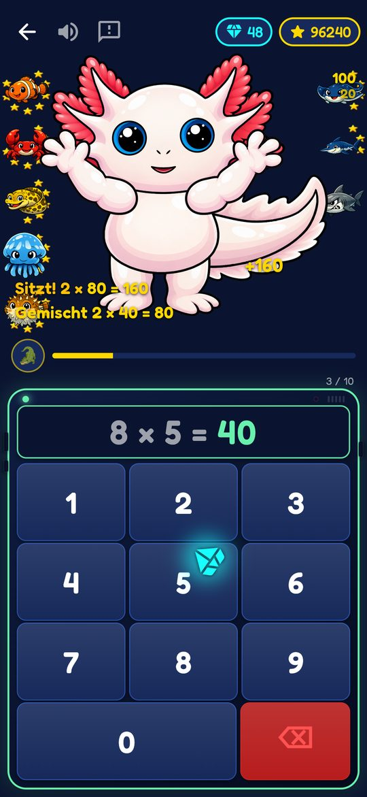
The problem
A child who still counts their way to 7 × 8 is slow, makes mistakes and has no head space left for what comes next: division, written arithmetic, fractions. But memorising is boring. So it often doesn't get practised enough – and then there are arguments at the kitchen table.
In Germany's IQB Education Trend 2021, around 22 % of fourth-graders missed the minimum standards in mathematics.
7 + 7 + 7 + 7 + 7 + 7 + 7 + 77 × 8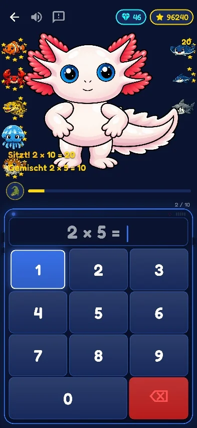
The solution
That is exactly what Ixilotl trains. It uses what makes games so engaging – but aimed at learning instead of ads and purchases. Every correct answer is a small win, with sparkle, sound and a cheering Ixi.
The heart of it
Everything in the app serves one goal. The game elements keep your child practising – not spending money.
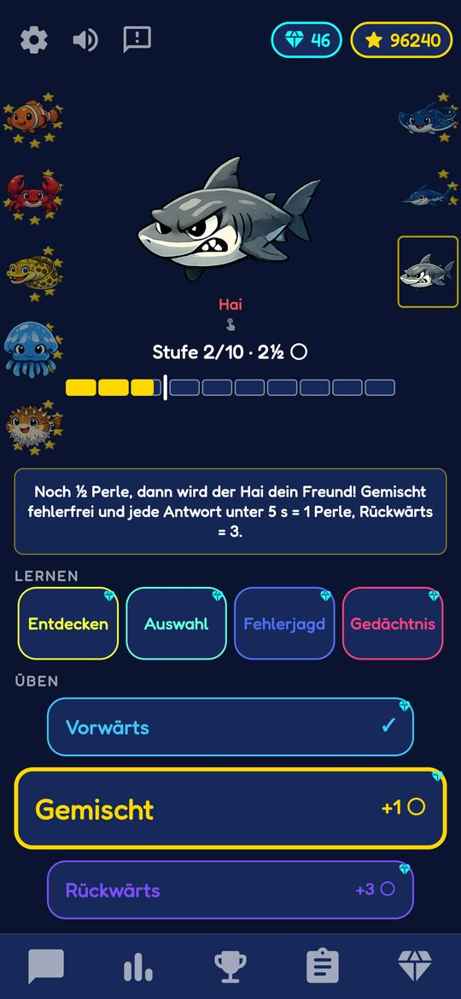
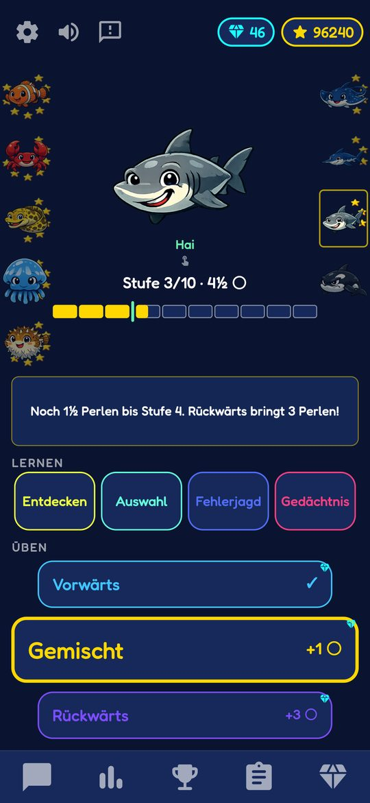
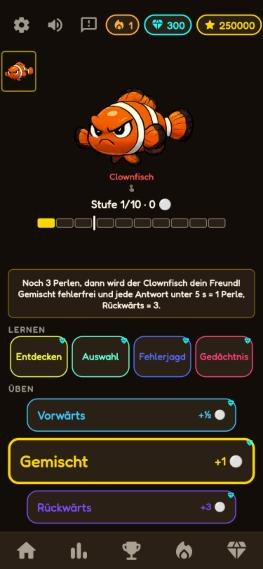
The axolotl talks to your child, celebrates with them and gives tips – but only after a round, never in the middle.
From the clownfish to the deep-sea kraken. The grumpy creature becomes a friend: a clear goal for every table.
Every good round earns pearls. Practice goes on beyond "I can do it" – until it is effortless.
Rewards go to getting faster and more confident. Repeating easy questions over and over doesn't pay off.
All 100 facts as tiles that glow brighter with every bit of progress. Gaps are visible at a glance.
Small tasks for today spread practice over many days. A missed day is never punished.
Colour worlds, Ixi colours and sounds, earned by practising. Looks only – never for sale for real money.
No point deductions, no lives, kind words. Practice without fear, especially for kids who struggle with maths.
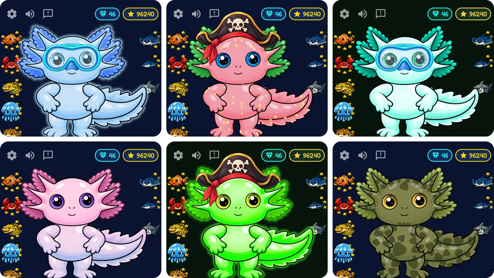
Learning path
Before it gets fast, it has to be clear what 3 × 4 actually means. That's why every table has two groups of missions.
In Discover, packets of beads drop into a hundred square. It makes visible what multiplying means – with no time pressure at all.
Recall instead of reciting. Backwards ("? × 5 = 35") counts the most – and prepares for division.
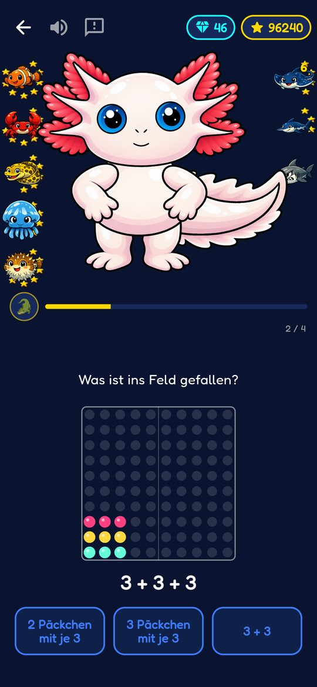
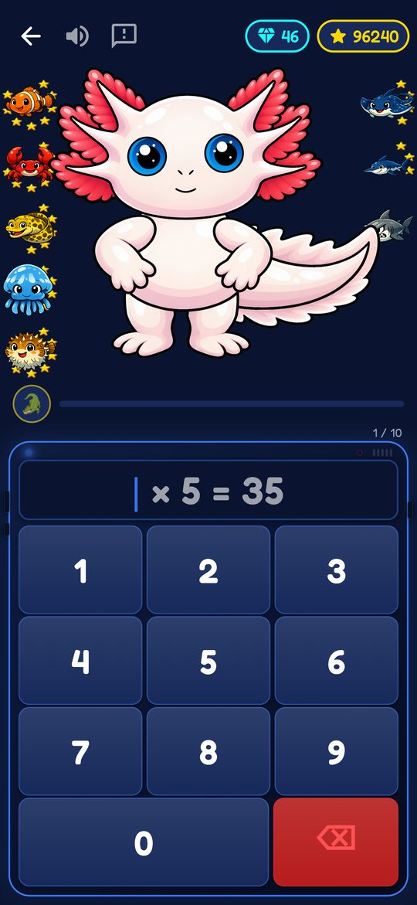
For parents
The colour map and Ixi's "What can I do already?" show learning progress – to you and your child alike.
No secrets: there is no hidden parent report. Your child may see everything you see – which helps them reflect on their own learning.
The protected parent area is only for grown-up things: privacy settings, sending emails (feedback, securing the gift) and, later, buying the full version.
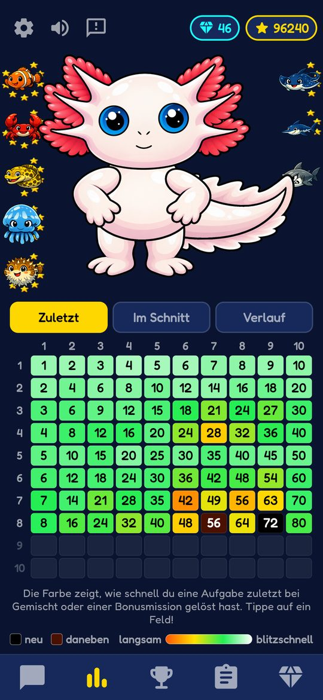
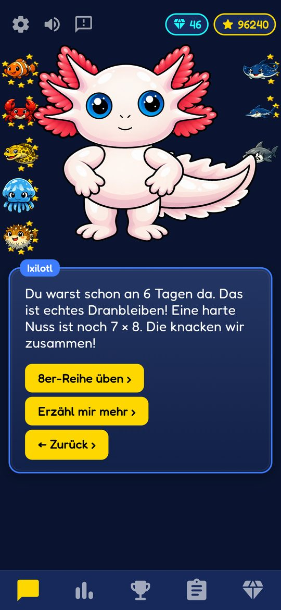
Trust
Price
Ixilotl is free during the open test. Anyone who installs and launches the app by 30 November 2026 (inclusive) gets the full version as a thank-you gift as soon as it exists. The gift applies as long as Ixilotl stays installed on the device. Terms (German)
From the sales launch (planned for early December 2026), Ixilotl can first be tried for free; after that, the full version is a one-time purchase. No subscription.
Our promise: Ixilotl is a one-time purchase. There is no subscription and there are no paid add-ons. Everything we release for Ixilotl in the future – including new content such as further times tables – comes at no extra cost to owners of the full version.
Which content arrives when is planned, not guaranteed. The promise is about cost: whatever comes costs nothing extra.
– Sebastian Buhl
At the sales launch, a Google Play code is sent to your sender address. Once redeemed in the Play Store, it applies to your Google account – even after reinstalling or on a new phone.
Why by email? Ixilotl has no account and knows neither names nor email addresses. So we don't know who uses the app and couldn't send you a code otherwise. We use your email address for this only: no newsletter, no ads, no sharing. Terms (German)
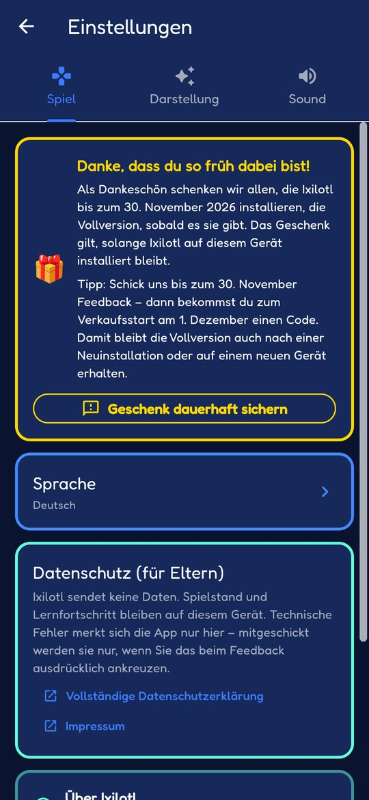
Outlook
Ixi swims through the world to the times-table creatures. Same learning principle, more movement, more adventure.
With times tables 11 to 20 as part of the full version. Install by 30 November and you get the full version as a gift – here's how to secure it.
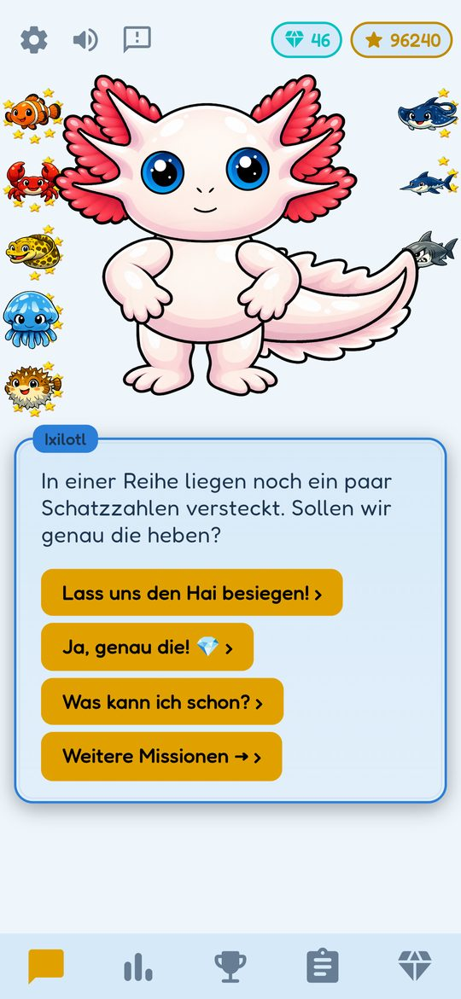
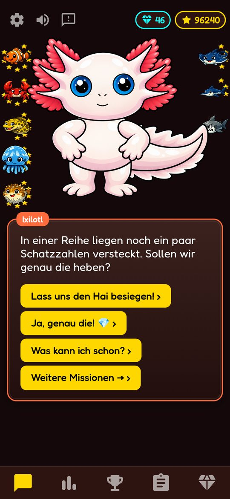
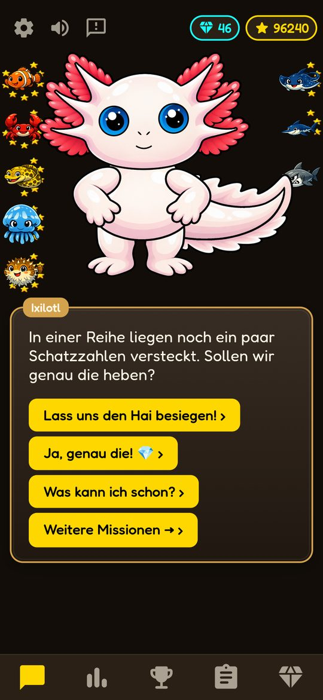
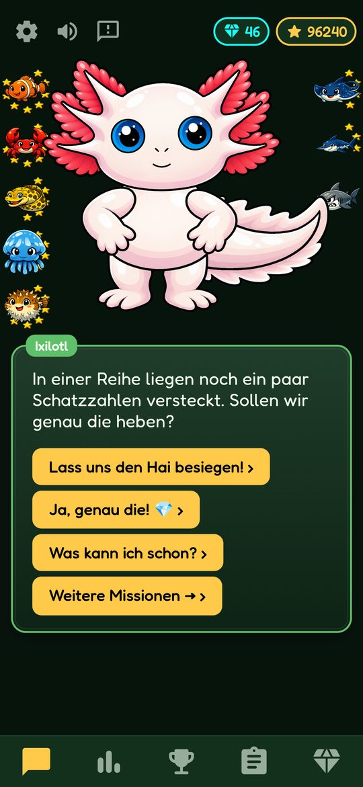
Already here: colour worlds children earn in the shop.
For teachers
Offline and without an account; learning results never leave the device. Every child practises at their own level, without being shown up in front of the class. A school version is planned.
Get in touch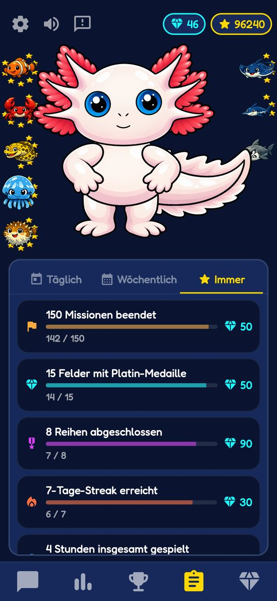
Who's behind it
Teacher, tutor, father, computer scientist.
"I know the problem from the classroom, from tutoring and from the kitchen table. And I know the learning apps that don't solve it."
For children aged about 6 to 10. Also for brushing up at 11+.
5 to 15 minutes is enough. A little regularly works better than a lot occasionally.
Not yet. A version for Apple devices is planned.
Not yet. Separate profiles for siblings are planned.
Ixilotl is available in 10 languages, including English and German.
No. Ixilotl works completely offline and without an account.
Progress stays on the device. Pseudonymous usage and crash statistics (no names, no learning results) exist only if you switch them on in the protected parent area – they are off by default. Learning results are never transmitted. More in the privacy policy.
Try it for free – install by 30 November 2026 and get the full version as a gift.